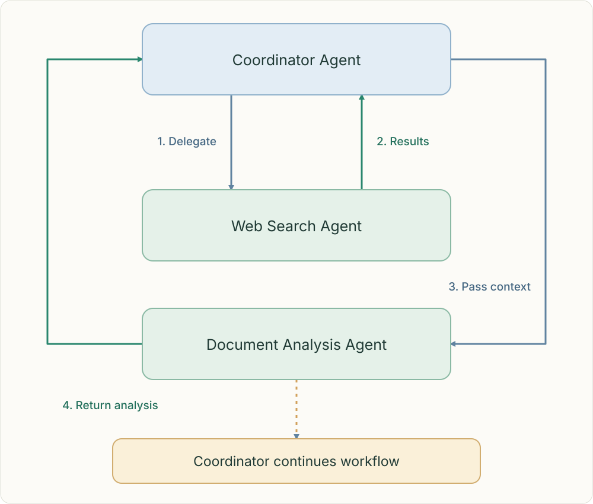

Coordinate specialists around a shared goal.
A multi-agent architecture divides a task among distinct agents. Each agent has its own context and responsibilities; the coordinator manages dependencies, handoffs and the final result.

The coordinator delegates search, receives results, passes those findings to document analysis, receives the analysis and continues the workflow.
The architecture: who does what
The coordinator owns the overall plan. Search agents gather evidence, analysis agents interpret it, and a synthesis agent combines findings. These roles are design choices: a small task may need only one agent.
Context crosses explicit boundaries
Agents do not automatically inherit one another’s findings. The coordinator must pass relevant results, constraints and claim–source mappings, or references to artifacts the receiving agent can access. The diagram shows a sequential dependency: search results must arrive before document analysis can use them.
Choose parallelism deliberately
Independent subquestions can run in parallel. Dependent steps must wait for their inputs. Define scope, acceptance criteria, budgets and failure handling before delegating; more agents bring more cost and coordination work.
Architecture versus execution loop
Multi-agent architecture describes the division of responsibility between agents. The agentic loop describes how an individual agent repeatedly chooses an action, receives a result and decides what to do next. A multi-agent system can contain many such loops.
Related topics
Practice
What input is missing? Who owns the next action? What evidence must survive? Explain the failure before choosing a component.
Sources & scope
Anthropic · How we built our multi-agent research systemAnthropic · When to use multi-agent systems
Independent learning guide · Reviewed 25 October 2026.